傾角變位法修正式
記住轉角勁度 4・3・2・6，修正式就不用死背。
配色對應黑板：\(\color{#c94f6d}\theta\)（轉角，粉紅）、\(\color{#2f7fb0}R\)（弦旋轉角，藍）、\(\color{#9a6b3c}M^F\)（固端彎矩，褐）。
0基本式
這支影片整理傾角變位法的三種修正式：遠端鉸接、對稱、反對稱。修正式的目的只有一個：先把已知條件代進去，消掉一個自由度，聯立方程式就少一條。
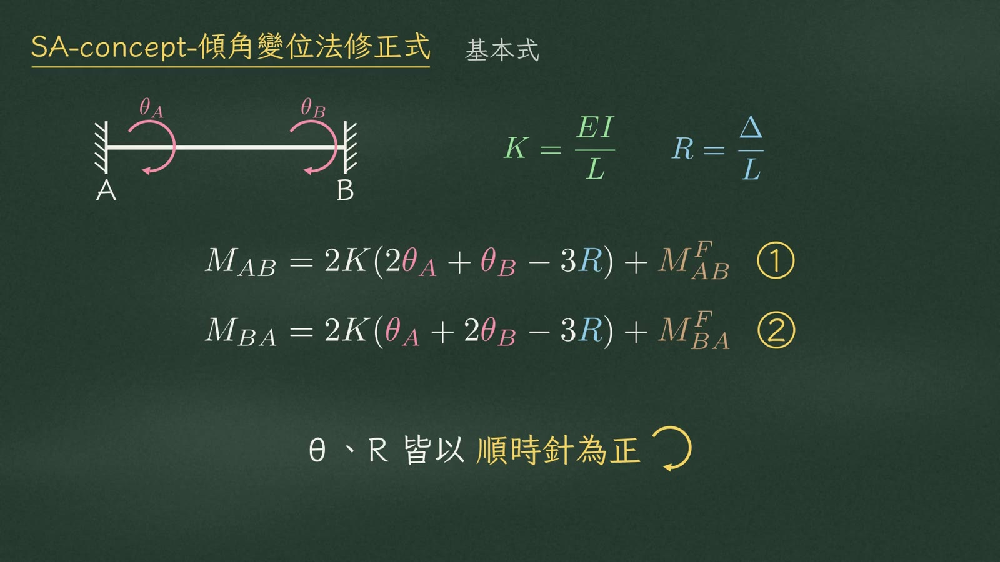
先回顧基本式：
\(K\) 是 \(EI\) 除以長度，\(\R\) 是 \(\Delta\) 除以長度，\(\theta\) 和 \(\R\) 都以順時針為正。
1一、遠端鉸接
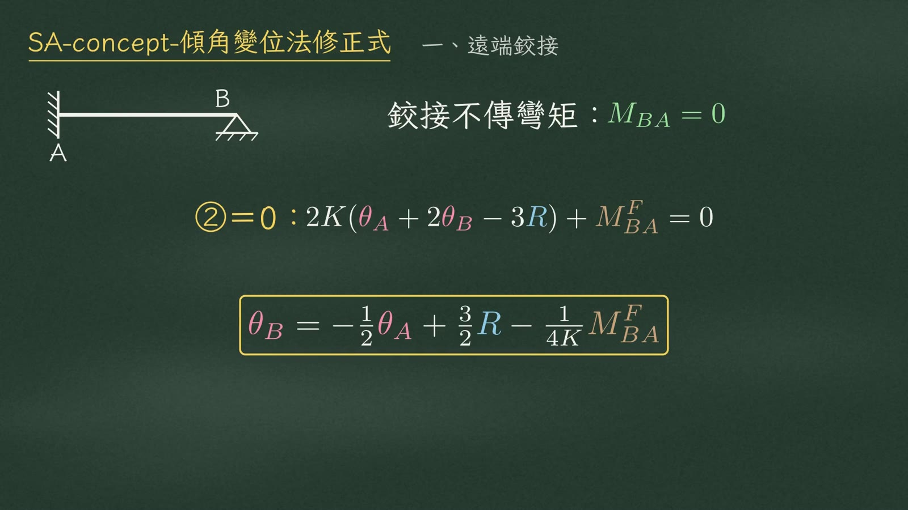
第一種，B 端是鉸接。鉸接不能傳彎矩，所以 \(M_{BA}=0\)。把式②設成零，就能把 \(\tB\) 用 \(\tA\) 和 \(\R\) 表示出來：
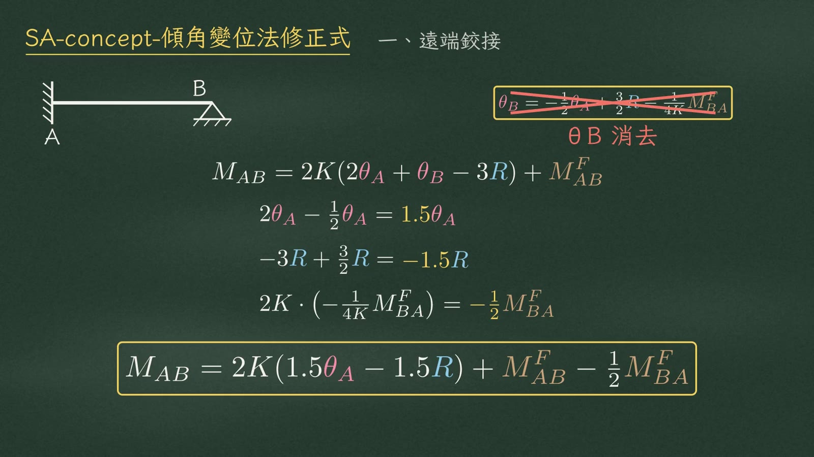
把 \(\tB\) 代回式①：
| 項目 | 整理 |
|---|---|
| 轉角項 | \(2\tA-\tfrac12\tA=1.5\tA\) |
| R 項 | \(-3\R+\tfrac32\R=-1.5\R\) |
| 固端彎矩 | \(2K\cdot\left(-\tfrac{1}{4K}\MF{BA}\right)=-\tfrac12\MF{BA}\) |
修正式：
\(\tB\) 這個未知數被消掉了。
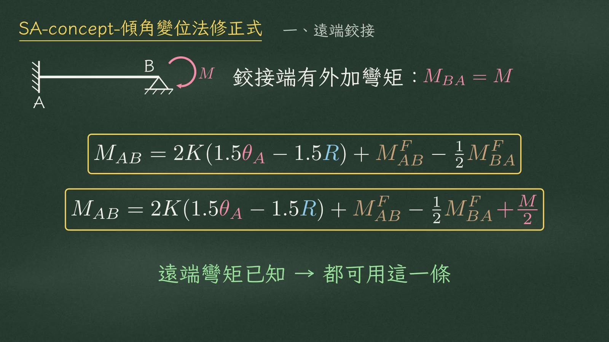
如果鉸接端還作用一個已知的外加彎矩 \(M\)，\(M_{BA}\) 就不是零而是 \(M\)。同樣代回，修正式後面再多一項 \(+\frac{M}{2}\)：
2鉸接修正的四個結論
把修正式跟基本式比對（基本 \(2K(2\tA+\tB-3\R)\)；鉸接 \(2K(1.5\tA-1.5\R)\)），得到四個結論。
| 結論 | 基本式 | 遠端鉸接 | 修正 |
|---|---|---|---|
| ① 轉角勁度 | \(4K\tA\) | \(3K\tA\) | \(\times\frac34\) |
| ② 桿端變位項 | \(6K\R\) | \(3K\R\) | \(\times\frac12\) |
| ③ 傳遞係數 | \(C=\frac12\) | \(C=0\) | 外加 \(M\) 傳一半：\(+\frac M2\) |
| ④ 固端彎矩 | \(\MF{AB}\) | \(\MF{AB}-\frac12\MF{BA}\) | 反向傳一半 |
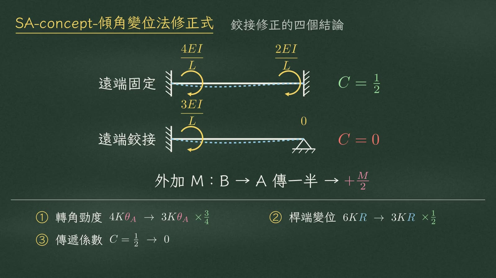
第三，傳遞係數。遠端固定時，A 端轉一個單位，B 端會產生一半的彎矩（\(4EI/L\) → \(2EI/L\)），傳遞係數是 \(\frac12\)；遠端鉸接，B 端彎矩永遠是零，傳遞係數是零。反過來，外加彎矩 \(M\) 從 B 傳到 A，一樣傳一半，所以是 \(+\frac M2\)。
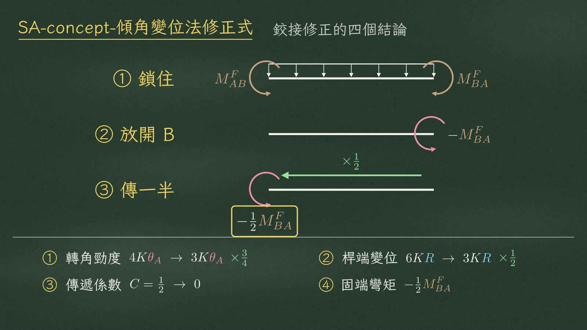
第四，固端彎矩反向傳一半。用彎矩分配法來看：
- 先把兩端鎖住，得到兩個固端彎矩 \(\MF{AB}\)、\(\MF{BA}\)；
- 再把 B 放開，B 端的鎖住力矩要反向加回去，也就是 \(-\MF{BA}\)；
- 這個放鬆力矩傳一半到 A，就是 \(-\frac12\MF{BA}\)。
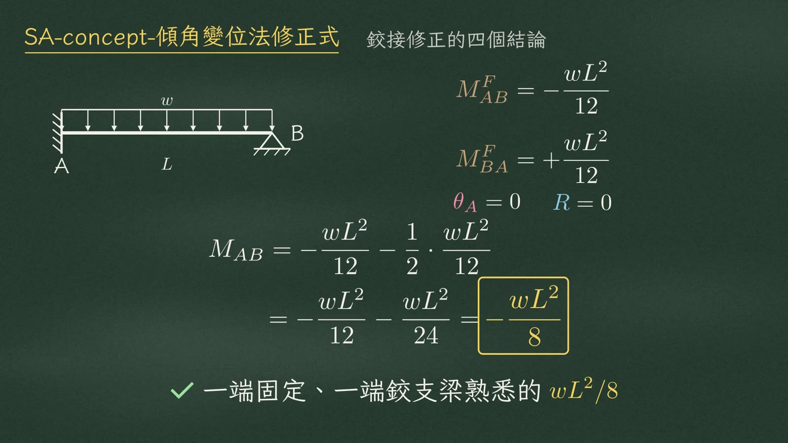
舉個例子驗證。A 固定、B 鉸接的梁，受均布載重 \(w\)：\(\MF{AB}=-\frac{wL^2}{12}\)，\(\MF{BA}=+\frac{wL^2}{12}\)。A 端不轉、沒有側移（\(\tA=0\)、\(\R=0\)）：
3勁度比較
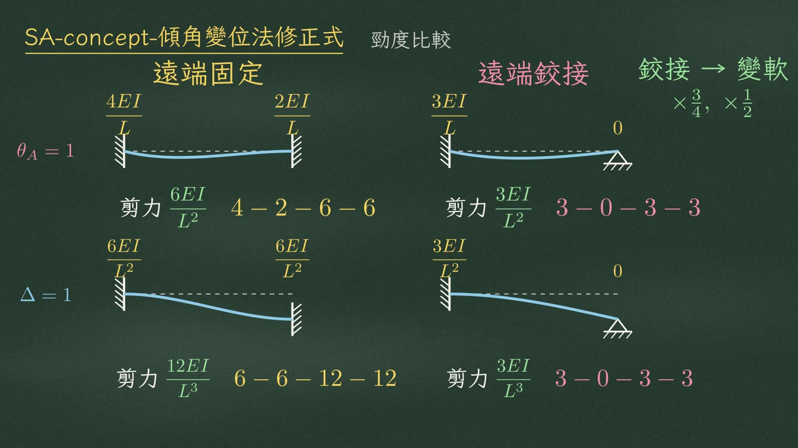
用勁度的觀念再看一次。遠端固定，A 端轉一個單位：A 端彎矩 \(4EI/L\)，B 端 \(2EI/L\)，兩端剪力 \(6EI/L^2\)，口訣 4、2、6、6。遠端鉸接：A 端 3，B 端 0，兩端剪力都是 3，口訣 3、0、3、3。
側移一個單位也一樣。兩端固定：兩端彎矩都是 \(6EI/L^2\)，剪力 \(12EI/L^3\)，6、6、12、12。遠端鉸接：只剩固定端有彎矩 \(3EI/L^2\)，剪力 \(3EI/L^3\)，又是 3、0、3、3。
| 單位變形 | 遠端固定 | 遠端鉸接 |
|---|---|---|
| 轉角 \(\theta_A=1\) | \(\frac{4EI}{L},\ \frac{2EI}{L}\)；剪力 \(\frac{6EI}{L^2}\) 4-2-6-6 | \(\frac{3EI}{L},\ 0\)；剪力 \(\frac{3EI}{L^2}\) 3-0-3-3 |
| 側移 \(\Delta=1\) | \(\frac{6EI}{L^2},\ \frac{6EI}{L^2}\)；剪力 \(\frac{12EI}{L^3}\) 6-6-12-12 | \(\frac{3EI}{L^2},\ 0\)；剪力 \(\frac{3EI}{L^3}\) 3-0-3-3 |
4二、對稱
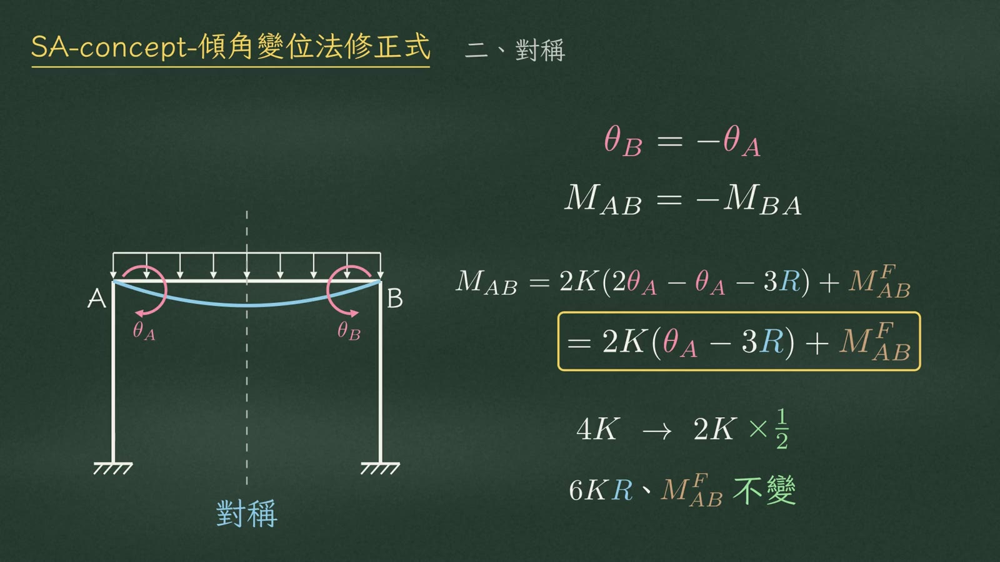
第二種修正：對稱。結構形式、勁度和荷重都對稱時，跨越對稱軸的那根梁，兩端轉角大小相等、方向相反：\(\tB=-\tA\)，\(M_{AB}=-M_{BA}\)。
代進基本式：\(2\tA-\tA\)，只剩一個 \(\tA\)。
轉角勁度從 \(4K\) 變成 \(2K\)，修正 \(\frac12\)；桿端變位項 \(6K\R\) 不變；固端彎矩也不變。
5三、反對稱
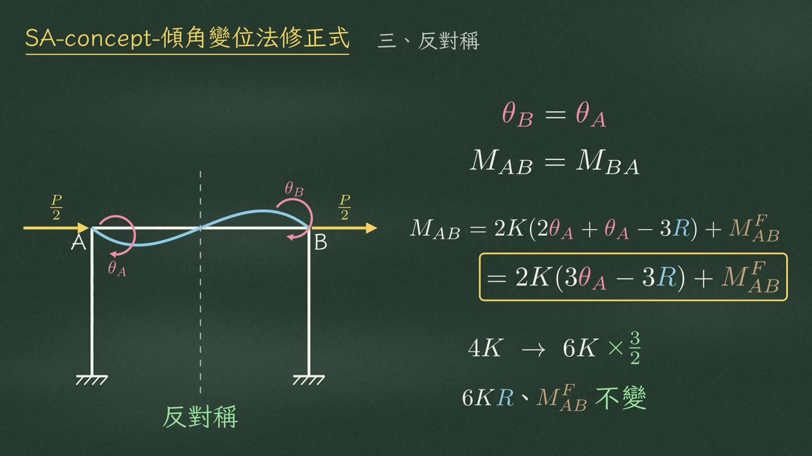
第三種：反對稱。結構和勁度對稱，荷重大小相等、方向相反，例如門型剛架受側向力。這時梁兩端轉角相同：\(\tB=\tA\)，\(M_{AB}=M_{BA}\)。
代進去：\(2\tA+\tA=3\tA\)。
轉角勁度從 \(4K\) 變成 \(6K\)，修正 \(\frac32\)；桿端變位項和固端彎矩一樣不變。
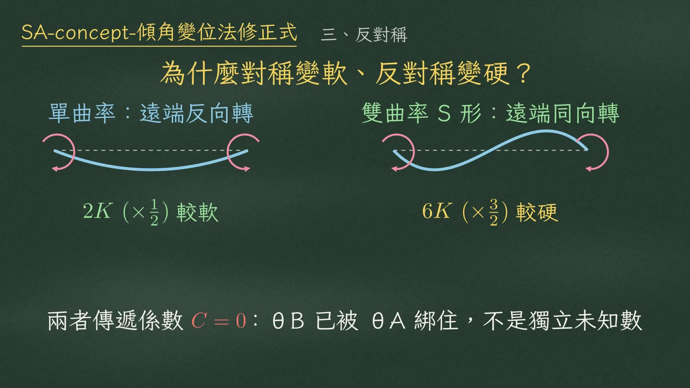
為什麼對稱變軟、反對稱變硬？
| 對稱 | 反對稱 | |
|---|---|---|
| 變形 | 單曲率 | 雙曲率（S 形） |
| 遠端轉向 | 反向轉，等於在幫近端放鬆 | 同向轉，要轉同樣的角度得出更大的力 |
| 轉角勁度 | \(2K\)（\(\times\frac12\)）較軟 | \(6K\)（\(\times\frac32\)）較硬 |
6取半結構
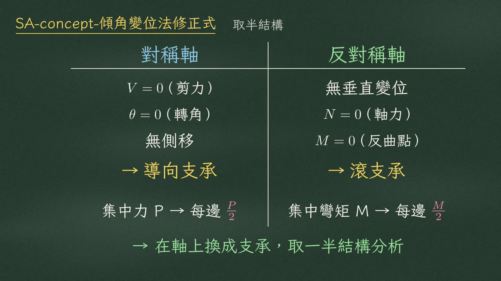
這兩個修正式配合對稱軸的特性，就能只取一半結構分析。
| 對稱軸 | 反對稱軸 | |
|---|---|---|
| 軸上特性 | 剪力 \(V=0\)、轉角 \(\theta=0\)、沒有側移 | 沒有垂直變位、軸力 \(N=0\)、彎矩 \(M=0\) |
| 換成 | 導向支承 | 滾支承 |
| 軸上集中載重 | 集中力 \(P\) → 每邊 \(\frac P2\) | 集中彎矩 \(M\) → 每邊 \(\frac M2\) |
7易錯點
三個常見錯誤。
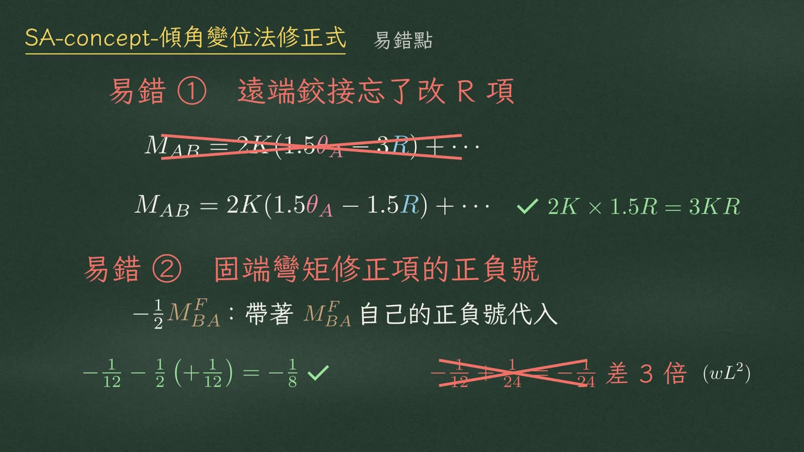
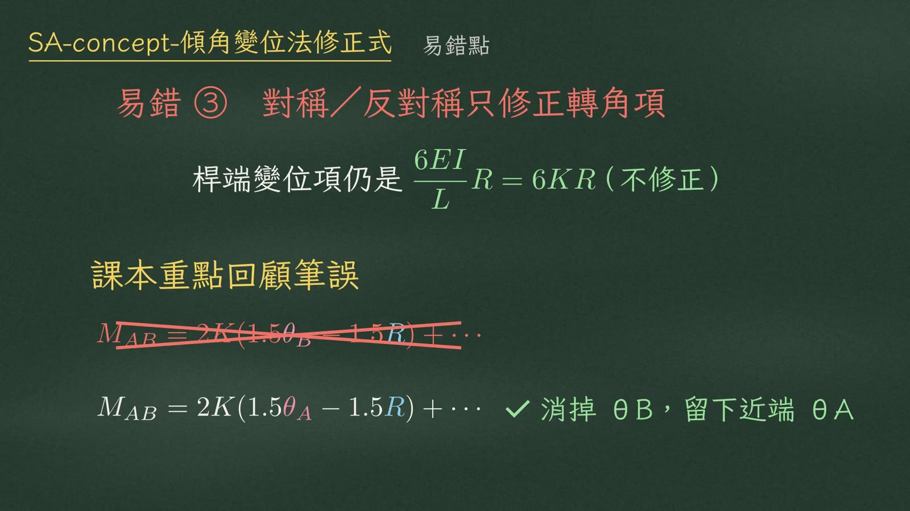
8總結
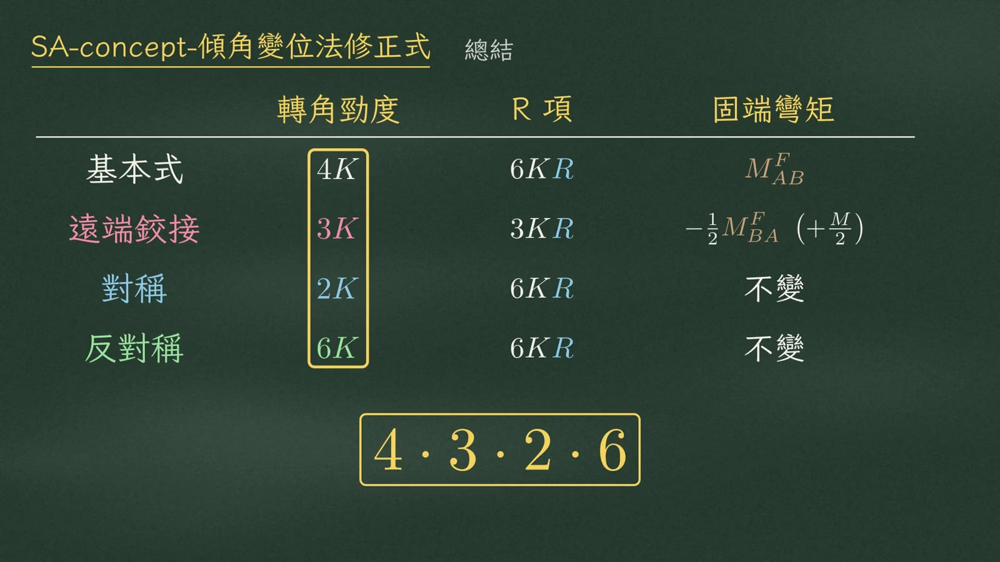
整理一下。基本式的轉角勁度是 \(4K\)。
| 轉角勁度 | R 項 | 固端彎矩 | |
|---|---|---|---|
| 基本式 | \(4K\) | \(6K\R\) | \(\MF{AB}\) |
| 一、遠端鉸接 | \(3K\) | \(3K\R\) | \(-\frac12\MF{BA}\)（外加彎矩 \(+\frac M2\)） |
| 二、對稱 | \(2K\) | \(6K\R\) | 不變 |
| 三、反對稱 | \(6K\) | \(6K\R\) | 不變 |
video/SA-concept-傾角變位法修正式.mp4（7:33）、video/segments.py（逐字旁白，21 段）、video/SA-concept-傾角變位法修正式.srt；黑板圖為各段結束前 0.5 秒截圖。例題數值已對照 video/HANDOFF.md 複算。